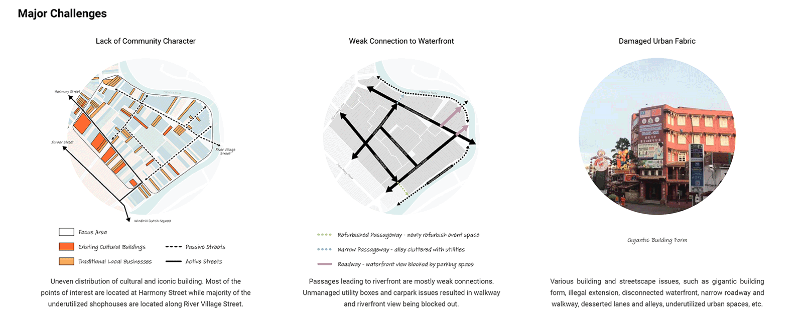
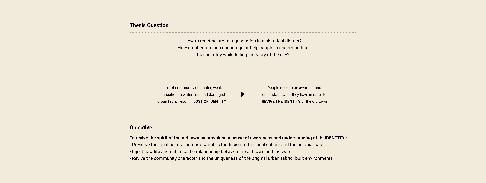
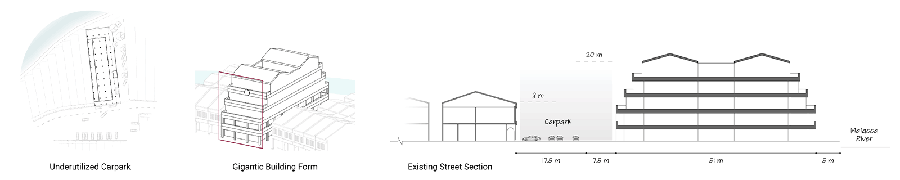
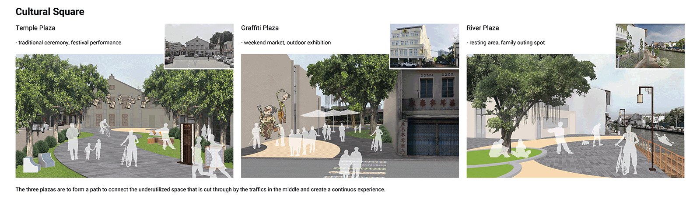
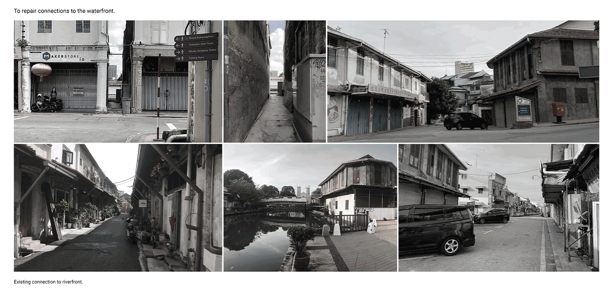
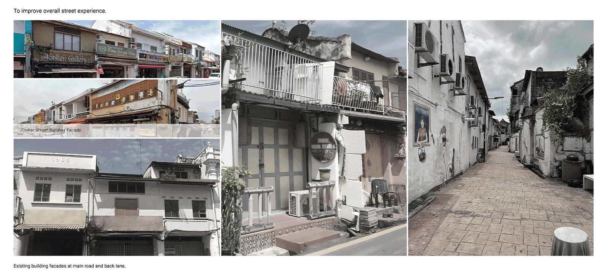
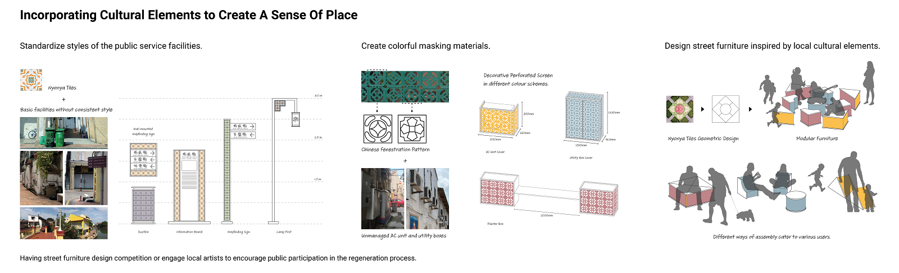

The Enliven Old Town
Redefining Urban Regeneration in Historical District
Summary
This design thesis is a study of urban issues and design principles pertinent to the Malacca Old Town. Malacca is currently facing intensified challenges in preserving its own unique and multifaceted cultural character in today’s context. Heritage commercialization has brought a significant impact on the traditional way of life of the original community. With the shift in industry and transportation mode, the importance of the river was no longer being valued. The charming old port city turns into a tourist-oriented district that did not respond to the historical past. As these transformations are lacking comprehensive guidelines that aim to protect the cultural character, what is left behind now are remnants of the past, isolated, and struggle to survive. There is an urgent need for recognizing the local heritage and the enhancement of public participation. However, the current regeneration strategy only focuses on façade renewal which standardized the facade treatment and the colour of the shophouses and resulted in the loss of cultural identity of the historic zone. Hence, the thesis asks: How to redefine urban regeneration in a historical district? How architecture can encourage or help people in understanding their identity while telling the story of the city?About Me
Growing up in Malacca, a small city yet rich in culture and customs, I wish to be able to contribute in protecting the historical past that shapes the old town we see today, and which that shapes me today.Name
Sandra Chan
Typology
Cultural
Site Location
Malacca, Malaysia
Contact

![]()
![]()
![]()










